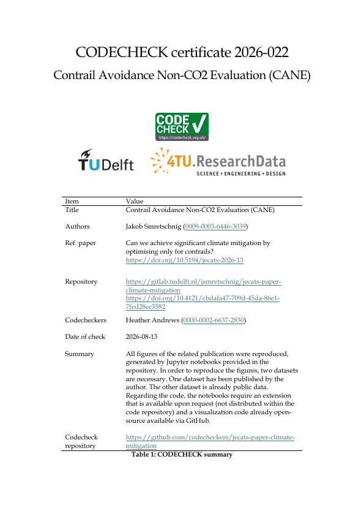

CODECHECK Certificate 2026-022

Paper details
Title: Can we achieve significant climate mitigation by optimising only for contrails?
Authors: Jakob Smretschnig , Feijia Yin , Dennis Piontek , Joël Clément , Sergio Núñez Arribas, Katrin Dahlmann , Federica Castino , Volker Grewe
Abstract: Obtained from CrossRef
Work publication date: 2026-07-28
CODECHECK details
Certificate identifier: 2026-022
Codechecker name: Heather Andrews
Time of check: 2026-08-14
Repository: https://github.com/codecheckers/jecats-paper-climate-mitigation
Full certificate: https://doi.org/10.5281/zenodo.21932994
Type: institution
Venue: TU Delft DCC
Summary:
Reproduction of the figures shown in the manuscript. Figures were generated by Jupyter notebooks provided in the repository. Two datasets are necessary to run the notebooks. One dataset has been published by the author. The other dataset is already public data. Regarding the code, the notebooks require an extension that is available upon request (not distributed within the code repository) and a visualization code already open-source available via GitHub.
Cite this certificate: Citation metadata retrieved from data.crosscite.org
https://codecheck.org.uk/ | codecheckers | Zenodo Community | ResearchEquals Collection
© team@cdchck.science | Published under CC BY-SA 4.0